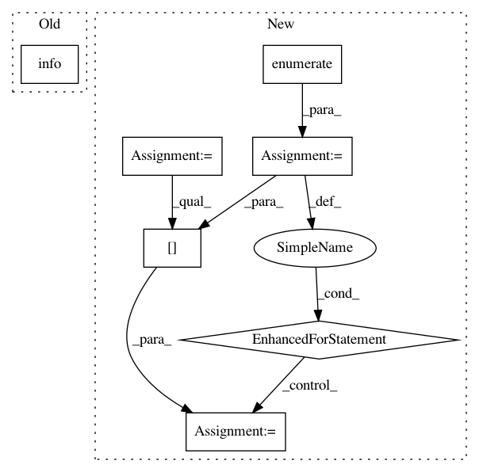

59524c7933c84680c5fb1b164814cd9b363d5727,homeassistant/components/mysensors.py,,setup,#Any#Any#,44
Before Change
if version == "1.4":
import mysensors.const_14 as const
CONST = const
_LOGGER.info("CONST = %s, 1.4", const)
elif version == "1.5":
import mysensors.const_15 as const
CONST = const
_LOGGER.info("CONST = %s, 1.5", const)
After Change
if isinstance(port, str):
port = [port]
if isinstance(persistence_file, str):
persistence_file = [persistence_file]
// Setup all ports from config
global GATEWAYS
GATEWAYS = {}
for index, port_item in enumerate(port):
persistence = config[DOMAIN].get(CONF_PERSISTENCE, True)
try:
persistence_f_item = persistence_file[index]
except IndexError:
_LOGGER.exception(
"No persistence_file is set for port %s,"
" disabling persistence", port_item)
persistence = False
persistence_f_item = None
GATEWAYS[port_item] = setup_gateway(
port_item, persistence, persistence_f_item)
return True
def mysensors_update(platform_type):
In pattern: SUPERPATTERN
Frequency: 3
Non-data size: 7
Instances
Project Name: home-assistant/home-assistant
Commit Name: 59524c7933c84680c5fb1b164814cd9b363d5727
Time: 2015-12-05
Author: marhje52@kth.se
File Name: homeassistant/components/mysensors.py
Class Name:
Method Name: setup
Project Name: ilastik/ilastik
Commit Name: 31987e99d495f8eafc83fa5294be44a746c51e19
Time: 2018-04-25
Author: carstenhaubold@googlemail.com
File Name: lazyflow/classifiers/pytorchLazyflowClassifier.py
Class Name: PyTorchLazyflowClassifier
Method Name: predict_probabilities_pixelwise
Project Name: ilastik/ilastik
Commit Name: eee44cb44984b803a0c4a0e6a2b41b48b200989e
Time: 2018-11-26
Author: carstenhaubold@googlemail.com
File Name: lazyflow/classifiers/pytorchLazyflowClassifier.py
Class Name: PyTorchLazyflowClassifier
Method Name: predict_probabilities_pixelwise